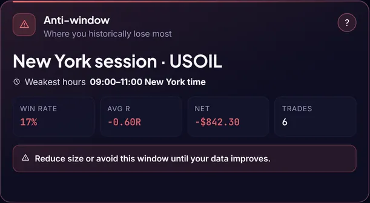

You have a
danger hour.
One time of the day where your trades keep losing. Most traders never find it, because they never look.
080910111213141516
Profit & loss by hour of entry · illustration
Find your danger hour
in 10 minutes.
- 1Export your last 3 months of trades from your broker (CSV).
- 2Group profit & loss by the hour you entered each trade.
- 3Find the hour with the worst total. Cut your size there, or skip it for 2 weeks.

Or let journzey find it for you, automatically.Edge Matrix · sample data
Try journzey free journzey.ai · link in bio